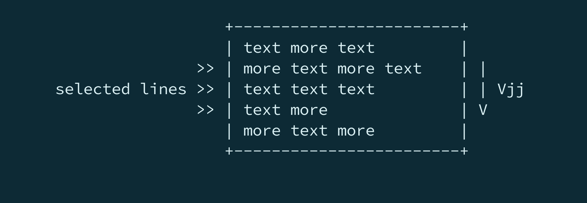
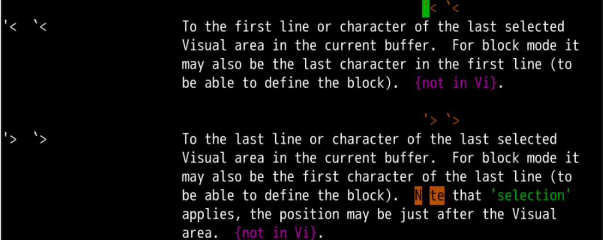
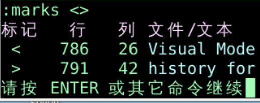
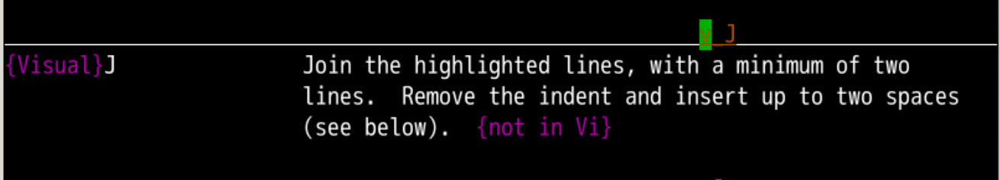

可视化编辑
回忆上节课内容🤔
- 上次我们了解到可视模式
- 其实可视化对应三种子模式
- 字符可视模式 v
- 行可视模式 大写V
- 块可视模式ctrl+v
- 我们先来了解字符可视化模式
- 快速操作
- 选中了之后可以进行以下操作
- 可以用"a使用指定寄存器
- 可以用
i和a快速选择范围
- w 小词 W 大词
- （）[] {} 各种括号
- t 标签，编写网页的时候很有用
- s 句子 p 段落
- b 小括号，这个编写程序的时候很有用
- B 大括号，编写程序的时候很有用
- " ' `引号内
- 以上是
字符 可视化模式
- 那么
行 可视化模式是什么意思呢？
切换模式
- 我们上次从正常模式切换到字符可视化模式用的是小写v
- 如果想切回来呢？
- 这次我们切换到行编辑模式，用大写V
- 可以看到左下角提示，"--- 可视·
行 ---"
- 切换过来之后可以快速的使用
motion控制结束行的位置
- 可以使用
33G跳转位置
- 也可以用o，切换选区首尾字符
- 选区选好之后可以做操作了
操作方法

基本操作
- 我们选择好了很多行之后怎么办呢？
- 我们选好选取之后，就可以
- 这和字符可视化模式一样的
- 可以使用
- 对
行 可视化模式，大小写没什么区别
- 不过对
字符 可视化模式，还是有区别的
使用命令行
- 用命令行模式
- 就像字符可视化模式一样
- 比如我:
- 左下角会出现:'<,'>就是从选区开头，到选区结尾
- 然后我们摁下d回车
- 我们可以
:h '< 查看相应手册

'< 这种形式很像标记啊- 就像ma做标记、'a跳转到标记那样
- 能否看看'<是否也是一个标记
选区标记
- 做好选区
:marks <>查看标记- 可以查找到选区的开始和结束标记mark

- 这刚好标记在了选取的开始结束位置
- 想要恢复选区应该怎么办？
恢复选区
- 做好了选区
- 进入了命令行模式
- ctrl+c 丢失了选区
- 想要恢复
'<v'>
'< 跳到原选区开头v 进入字符可视化模式'> 跳到原选区结尾
选区内替换
- 在选择好文本范围后，可以在选区范围内控制查找替换
:'<,'>s/shiyanlou/oeasy/g
:'<,'>s/shiyanlou/oeasy/gc
:'<,'>g/^.*drwxwr.*$/d
合并多行
- 可以用J把这好多行合并成
1行
- 可以查询帮助
:h v_J 可视模式下的J的作用
- 除了行可视化之外，字符可视化也可以J将多行合成一行
- 简单说就是把回车换行删除掉

总结
- 这次我们了解到行可视模式
- 行可视模式 V
- 也可配合各种
motion
- o切换首尾
- 选区的开头和结尾是
mark标记
- 可以在选区内进行替换和删除
:'<,'>s/shiyanlou/oeasy/g 范围内批量替换:'<,'>s/shiyanlou/oeasy/gc 范围内批量替换待确认:'<,'>g/^.*drwxwr.*$/d 范围内有drwxwr的直接删除- 选中了之后可以进行d、c、y等操作
- 可以用"a使用指定寄存器
- 可以合并多行
- 这次是
行可视化模式
- 那么
块可视化模式又是什么意思呢？🤔
- 下次再说 👋